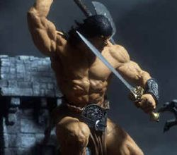

Les Terres de Kirin Tor
Hrunh
Points : 22

Joué par :
[ Information masquée ]
Age : 27
Lieu de naisance : Montagnes d'Alterac
Signe de naissance : Gorille
Sexe : Homme
Race : Humain
Faction : Alliance
Formation : Guerrier
Niveau : 60
Guilde : Horde des Loups Gris (la)
Artisanat 1 : Herboriste
Artisanat 2 : Dépeceur
Envoyer un MP
Informations hrp : Hrunh n'est pas mauvais, il a un profond respect pour la vie et pour les gens. Il se méfie de certains et donnent parfois sa confiance de façon un peu trop excessive. Il déteste les lâches et les assassins. Il essaiera tant bien que mal de lutter pour une cause qui lui semble juste.
Description : Alors que le froid tiraillait ses os, Hrunh observait ce qu'il se passait dans la vallée en contrebas. Cette vallée si paisible et vivante qui étaient autrefois celle de ses ancêtres étaient infestés d'ogres et de créatures tout aussi repoussantes. La horde envahissait de plus en plus de contrée et personne ne faisait rien.
"Cela suffit !" s'écria Hrunh.
Ses ancêtres qui s'étaient battus avec courage et force avec ce nom dont ils étaient si fiers, les Loups Gris, avaient été réduits en miette sous le nombre toujours croissant de leurs assaillants. Il était un des derniers survivants et Uthgar devait le regarder pour savoir si il aurait le courage d'enfin se lever comme un homme et défendre son héritage.
Il décida que ceci avait assez duré et qu'il irait voir des responsables pour qu'ils lui disent enfin ce qu'ils comptaient faire.
Après plusieurs mois d'un dur et long voyage, il arriva enfin devant la belle et somptueuse Stormwind. Bien de demandes d'audiences et de rejets plus tard, il pu enfin être reçu. il s'entretenu longuement avec les hautes instances de Stormwind et n'en ressortit pas appaisé. Personne ne su ce qui s'était dis, mais une chose était sûre Hrunh prendrait lui-même les choses en main.
Il chasserait les ennemis de l'Alliance et défendrait les peuples incapables de le faire par eux-mêmes. Il n'aimait pas les lâches et le ferait savoir. Sa langue il ne la garderait pas dans sa poche et ce quoi que cela puisse coûter.
Il utiliserait son héritage et sa sauvagerie innée au combat pour combattre la Horde et ses alliés, il crierait sa dévotion à Uthgar et ferait savoir dans le sang qu'il faudra dorénavant compter avec lui. La Horde ne fait pas de cadeau et seul un Loup peut en tuer un autre.
Il clamerait son appartenance aux Loups Gris et cracherait à la gueule de toutes ces factions corrompues qui pensent que les tâches de sang s'oublient avec le temps. L'heure est venue de passer aux armes !
Troisième Ère [1]
Lune de la Force
Décade du Panda
Décade du Gorille
Décade de l'Ours
Lune d'Agilité [1]
Décade du Tigre
Décade du Singe [1]
Décade du Faucon
Lune de l'Esprit
Décade de la Chouette
Décade de la Baleine
Décade du Lapin
Quatrième Ère [1]
Lune de la Force [1]
Décade du Panda
Décade du Gorille [1]
Les Origines des Loups Gris
Les Loups Gris, tel était le nom du village que j'habitais étant enfant. Ce nom ne ressemble pas à un nom de village classique, mais c'est le nom qui a été attribué aux membres du village, farouches défenseurs de leurs demeures et de leurs familles devant les meutes de loups fort présentes dans la région.
Les monts d'Alterac était hostiles et inhospitalier. A Cause de cela nos représentants étaient obligés d'aller faire du commerce jusqu'à la ville la plus proche, Southshore. Mais avec le temps, et le travail accrue des membres du village pour réduire la population de loups, les marchands ont décidés d'envoyer une caravane tout les mois afin de faire du troc avec les notres.
Voilà, c'est au milieu de ceci que mon enfance s'est déroulé, désigné que j'étais à être un Loup Gris moi aussi. Mais il faut croire qu'Uthgar n'a pas su nous protéger des notres ... enfin, plus précisement d'un des notres.
Mais revenons d'abord à ce qui m'amène à vous raconter cela.
Il y a peu, un de mes contacts avec lequel j'échange de l'or pour des informations diverses, qui nous permettent, à nous les Loups Gris, d'en apprendre plus sur les ennemis d'Azeroth, m'appris qu'un homme avait l'air d'en savoir un bout sur les loups gris. Intrigué, mon contact croyait qu'il parlait de notre clan mais force était de constater qu'il parlait plutôt de mon village et de feu mes ancêtres.
Je décida d'envoyer Jazmyn, mon espion personnel, le retrouver afin d'avoir les renseignements adéquats contre l'or promis. Mais il n'était pas au rendez-vous. Selon le patron de l'auberge de Baie du Butin, il se serait aventuré prés de ruines de l'ancien Empire Troll des Jungles de Strangleronce. Jazmyn vint me faire son rapport.
Je décida, lors de la réunion avec nos membres qui se déroulait à Darkshire, de leur en parler et ils virent là une opportunité et un honneur d'en apprendre un peu plus sur ce nom qui maintenant était un peu d'eux-mêmes ... même si les loups n'étaient plus aussi facile à repérer qu'avant.
Ils partirent donc pour la jungle de Strangleronce et aprés une âpre enquête ils réussirent à le trouver, Zack avait réussi à se libérer des trolls qui en avait fait un captif rançonnable ... enfin rançonnable cela dépend pour qui. Nombre de ses clients seraient prête à payer, mais pour le voir mourir.
Les renseignements leur fuentt livrés gratuitement et finalement ils partirent pour la capitale. La majestueuse Stormwind, qui n'a plus de majestueux que ses murs et son chef de guerre tellement la corruption à l'air de s'évader des pores de cette ville qui a désormais perdu de sa superbe.
L'homme se nommait Herlick ... un vieil homme résidant prés de la prison (Zack avait même poussé le vice à le suivre jusque chez lui, il faut croire) et qui fréquentait souvent la taverne du cochon siffleur.
Aprés des détails qui ne regardent que mes hommes, l'homme avoua bon nombre de choses qui me laissèrent perplexe.
Herlick était un de ces Loups Gris ... mais peut être bien moins courageux que lui même ne voulait se l'avouer. Il se sentait rejeté par les autres membres, il ne lui portait aucune attention et évitait même de trop le fréquenter. Les enfants le raillait et il se mit à se réfugier de plus en plus souvent dans les forêts alentours. Selon ses dires les démons l'avaient entendu et avait décidé de lui donner un coup de main. Pour cela ils lui envoyèrent un magicien, quelqu'un capable de l'aider dans son but ... mais son but n'était pas de les tuer ... juste les salir un peu, leur faire payer sa propre jalousie.
Le pauvre homme fut manipulé. Le magicien se servit d'Ogres, qui maintenant peuplent la région, pour détruire le village et rayer définitivement toute vie de ces contrées reculées. Je fus un des rares survivants sauvés par ces marchands étonnés de trouver le village détruit.
Herlick le traître avait fui devant la calomnie du mage, il avait eu peur que le mage ne le détruise aprés sa besogne, pour éviter de laisser un témoin derrière lui. Aprés nos discussions avec Herlick, Tetaclak se demanda quel était l'intérêt de détruire un village qui subsistait de chasse et de pêche et qui faisait vivre ses familles également grâce au troc.
Selon Herlick, il n'y avait rien d'intéressant au sein du village, si ce n'est les armes et armures du chef de guerre des Loups Gris, mais seulement pour un des combattants du village ... et peut-être la pierre d'Uthgar, celle qui permettait au "Prêtre" de "parler" à Uthgar, protecteur des Loups Gris.
La Pierre ... tous se régardèrent. Il était devenu évident qu'ils nous faudraient en apprendre plus sur cette pierre, ainsi que sur le nom de ce magicien donné lors d'un dernier râle qui emporta Herlick le traître bien loin dans les enfers. Kimesin ... peut être était-ce un nom d'emprunt, ou pas. En tout cas nous avions quelques pistes et nous ne resterons pas les bras croisés.
Nous courrons aprés notre destin. Dorénavant nous ferons en sorte de le devancer.
Décade de l'Ours
Lune d'Agilité
Décade du Tigre
Décade du Singe
Décade du Faucon
Lune de l'Esprit
Décade de la Chouette
Décade de la Baleine
Décade du Lapin